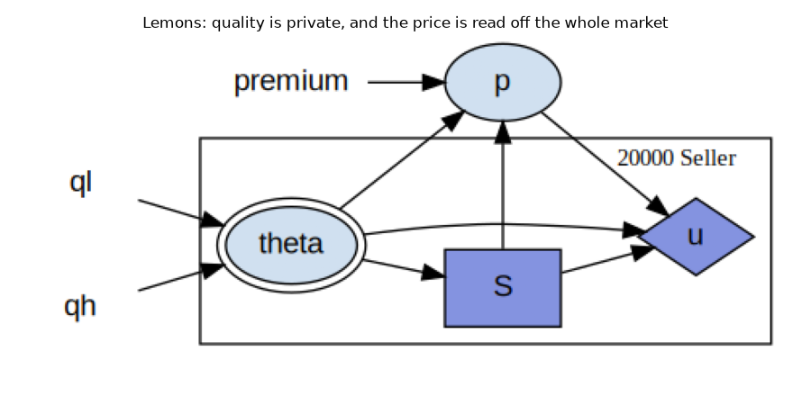
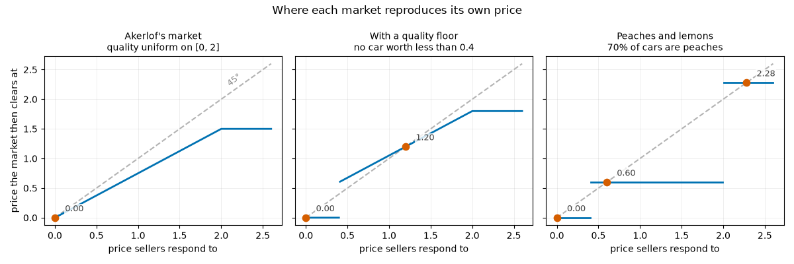
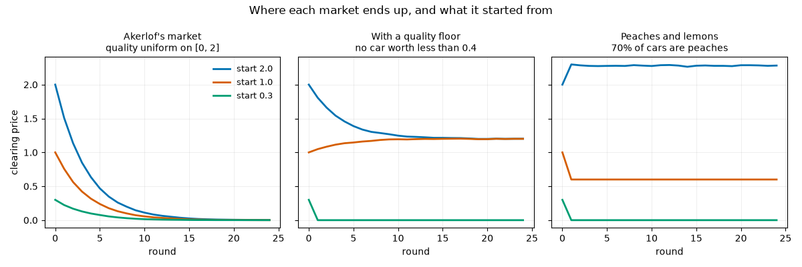

Note
Go to the end to download the full example code.
Lemons: Adverse Selection, and Three Markets That Look Alike¶
A seller knows what their own car is worth. A buyer does not, and can offer only what the average car on the market is worth. Every seller holding a car better than that average would rather keep it, so the good cars leave; the average falls; more sellers withdraw. Akerlof (1970) [1] showed that this can run all the way down, until nothing trades at all, even though every car is worth more to a buyer than to the person holding it.
What adverse selection is¶
Adverse selection is what happens when one side of a trade knows something about the good that the other side does not, and the terms on offer therefore decide which goods are brought to market. The uninformed side can price only an average, and an average price is most attractive to whoever holds the goods that are worst, so what trades is worse than what exists and the average the price was based on was the wrong one.
This market is that mechanism with nothing else in it. A seller knows \(\theta\) and a buyer does not, so the price can reflect only the average quality of the cars actually offered. Every seller whose car is worth more than the price keeps it, so the cars offered at price \(p\) are those with \(\theta \leq p\) and their average quality is below the average of the population. A buyer paying a premium on that lower average offers less than \(p\), fewer sellers are then willing, and the average falls again. The selection is visible in the model as the gap between the average car and the average car that trades, and the page measures that gap below.
This page does four things:
states the model and the price that clears it,
watches the market collapse, and checks the path against the closed form,
replaces the spread of quality with Akerlof’s two types, where the market has somewhere to stop, and
asks the analysis layer which of these markets can be solved one decision at a time.
The fourth is the reason there are several markets on this page rather than one. They are the same market under different timings, they have the same equations, and a cyclicity test cannot tell them apart – yet one needs an equilibrium solver, one needs only a simulation, and one is solved by backward induction.
The Model¶
Notation¶
Shock: \(\theta_i\), the quality of the car seller \(i\) holds, which only that seller can see.
Control: \(S_i\), whether to offer it, the one decision a seller makes.
Price: \(p\), common to the whole market.
Payoff: \(u_i\), the seller’s surplus, which is zero unless it sells.
A seller values a car at its quality and a buyer values it at a premium \(m\) on that quality, so a seller offers exactly when the price covers what the car is worth to them, and competition among buyers drives the price to the buyer valuation of what is actually on the market:
The defaults are the paper’s own: quality uniform on \([0, 2]\), and a premium of \(3/2\).
Where the collapse comes from¶
Sellers offer when \(\theta \leq p\), so the cars on the market are uniform on \([0, p]\) and their average quality is \(p/2\). The price that clears is then \(m p / 2\), which for \(m = 3/2\) is \(0.75\,p\) – lower than the price the sellers were responding to. Repeat, and the market walks down to zero.
The map \(p \mapsto m\,E[\theta \mid \theta \leq p]\) has two readings. Iterated, it is the price path of a market whose sellers respond to whatever was posted last round. Read once, it gives the price that sellers anticipating \(p\) would bring about, so the prices it leaves unchanged are the equilibria of a market with no lag in it.
Three timings¶
The module composes the same blocks three ways, and the order is the whole of the difference:
lemons_block: the sellers decide, the market clears on what they offered, and they are paid at that price. Nothing is lagged, so a seller’s rule has to anticipate the price that rule itself induces. This is a fixed point in rules.naive_lemons_block: the sellers are paid at a price already posted, and the market then clears at what their decisions imply. The price is read before it is written, so it is an arrival state and simulating the model is the iteration.monopsony_block: a single buyer names the price before any car is offered. The price is a decision, and the model is solved by backward induction.
References¶
import matplotlib.pyplot as plt
import numpy as np
import skagent.models.lemons as lemons
from skagent.ground import GroundedBlock
from skagent.simulation.monte_carlo import Simulator
from skagent.solver import project
from skagent.utils import plot_block_diagram
SELLERS = 20000
ROUNDS = 24
# Colours chosen for colour-vision deficiency: blue, vermilion, bluish green.
SERIES = ["#0072B2", "#D55E00", "#009E73"]
def posted_path(block, calibration, start, rounds=ROUNDS):
"""Simulate a posted-price market, and return the price after each round."""
sim = Simulator(
calibration,
block,
{"S": lemons.seller_rule},
{"p": start},
sample_count=1,
T_sim=rounds,
seed=0,
)
sim.initialize_sim()
return np.asarray(sim.simulate()["p"]).ravel()
The model as the library sees it¶
The dynamics of the anticipated-price market, in the order they run. theta
is the quality the seller holds, S the decision to offer it, p the
price the market clears at, and u the seller’s surplus.
lemons.lemons_block.display_formulas()
S = Control(theta)
p = Function(theta, S, premium)
u = lambda S, p, theta: S * (p - theta)}
A decision carries the agent it belongs to and the information set it is taken on. The seller’s information set is its own car and nothing else, which is what makes the quality private and the market a lemons market:
for symbol, control in lemons.lemons_block.get_controls().items():
print(f"decision {symbol:3s} agent {control.agent:8s} observes {control.iset}")
for symbol, agent in lemons.lemons_block.reward.items():
print(f"payoff {symbol:3s} agent {agent}")
decision S agent seller observes ['theta']
payoff u agent seller
The markets on this page are the same leaf blocks composed in different orders. Where the payoff block sits says which price a seller is paid at, and where the market block sits says whether the price is known when the seller decides, so the composition is the whole of the timing:
for label, block in [
("anticipated", lemons.lemons_block),
("posted price", lemons.naive_lemons_block),
("buyer commits", lemons.monopsony_block),
]:
parts = []
for part in block.blocks:
inner = getattr(part, "blocks", None)
parts.append(
f"{part.name}({', '.join(b.name for b in inner)})" if inner else part.name
)
print(f"{label:14} {' -> '.join(parts)}")
anticipated sellers(quality, supply) -> market -> payoffs(seller_payoff)
posted price sellers(quality, offer) -> payoffs(seller_payoff) -> market
buyer commits bid -> sellers(quality, offer) -> payoffs(seller_payoff) -> surplus
The model as a graph¶
Quality theta is a shock, the offer S is the seller’s decision, and
u is the seller’s surplus. The one edge that leaves the seller class is
the price p, which is read out of the whole population and paid to each
seller individually. A single decision node stands for the class, which is
what makes this a population model rather than a market written out one seller
at a time.
market = GroundedBlock(lemons.lemons_block, lemons.lemons_calibration(size=SELLERS))
plot_block_diagram(
lemons.lemons_block,
"Lemons: quality is private, and the price is read off the whole market",
calibration=market.calibration,
figsize=(9, 4.5),
)

The selection, measured¶
At any price, the cars offered are the ones worth less than it, so the average car on the market is worse than the average car in existence. The gap between those two averages is the adverse selection, and the last column is what a buyer paying a premium on the offered average is willing to pay next.
print(
f"{'price':>7} {'offered':>9} {'avg car':>9} {'avg offered':>13} {'clears at':>11}"
)
for price in (2.0, 1.5, 1.0, 0.5):
sim = Simulator(
market.calibration,
lemons.naive_lemons_block,
{"S": lemons.seller_rule},
{"p": price},
sample_count=1,
T_sim=1,
seed=0,
)
sim.initialize_sim()
history = sim.simulate()
quality = np.asarray(history["theta"]).ravel()
offered = np.asarray(history["S"]).ravel() > 0.5
print(
f"{price:7.2f} {offered.mean():9.2%} {quality.mean():9.3f} "
f"{quality[offered].mean():13.3f} "
f"{float(np.asarray(history['p']).ravel()[0]):11.3f}"
)
price offered avg car avg offered clears at
2.00 100.00% 1.005 1.005 1.508
1.50 74.80% 1.005 0.755 1.133
1.00 49.66% 1.005 0.505 0.757
0.50 24.46% 1.005 0.247 0.370
Every row clears below the price it started from, which is what walks the market down, and the table separates the two reasons for it. At a price of 2.0 every car is offered and there is no selection at all; the price falls anyway, because a buyer paying three halves of the average car values it at 1.508 rather than 2.0. Below that, selection appears and strengthens as the price drops: at 1.0 the cars offered average half of what the population does, and at 0.5 a quarter. The first effect starts the market falling and the second keeps it falling.
Three markets and their clearing maps¶
The figure below plots each market’s clearing map against the 45-degree line. Wherever the two cross, the price reproduces itself, and that is an equilibrium. The slope at a crossing says whether a market nearby moves toward it or away.
The three panels are the paper’s own market, the same market with a floor under quality, and the two-type market of the next section.
CONFIGS = [
("Akerlof's market\nquality uniform on [0, 2]", lemons.MARKETS["akerlof"], None),
(
"With a quality floor\nno car worth less than 0.4",
lemons.MARKETS["partial-collapse"],
None,
),
(
"Peaches and lemons\n70% of cars are peaches",
lemons.PEACH_MARKETS["two-prices"],
"two-type",
),
]
grid = np.linspace(0, 2.6, 400)
fig, axes = plt.subplots(1, 3, figsize=(12, 4), sharex=True, sharey=True)
for ax, (title, config, kind) in zip(axes, CONFIGS):
if kind == "two-type":
curve = np.array([lemons.peaches_clearing_map(p, **config) for p in grid])
fixed = lemons.peaches_fixed_points(**config)
else:
curve = np.array([lemons.clearing_map(p, **config) for p in grid])
fixed = lemons.clearing_fixed_points(**config)
# These maps step where the worst car first becomes worth offering. Blanking
# the point just past a step stops the line being drawn across it, which
# would show prices the market never clears at.
curve[np.abs(np.diff(curve, prepend=curve[0])) > 0.15] = np.nan
ax.plot(grid, grid, color="0.7", linestyle="--", linewidth=1.5, zorder=1)
ax.plot(grid, curve, color=SERIES[0], linewidth=2, zorder=2)
ax.scatter(fixed, fixed, s=55, color=SERIES[1], zorder=3)
for point in fixed:
ax.annotate(
f"{point:.2f}",
(point, point),
textcoords="offset points",
xytext=(11, 7),
fontsize=9,
color="0.25",
# The labels sit where the map meets the 45-degree line, so they are
# lifted off both rather than printed over them.
bbox={"facecolor": "white", "edgecolor": "none", "alpha": 0.8, "pad": 1},
)
ax.set_title(title, fontsize=10)
ax.set_xlabel("price sellers respond to")
ax.grid(True, alpha=0.25, linewidth=0.6)
ax.set_axisbelow(True)
axes[0].set_ylabel("price the market then clears at")
axes[0].annotate(
"45°",
(2.1, 2.1),
textcoords="offset points",
xytext=(-4, 8),
color="0.55",
fontsize=9,
rotation=38,
)
fig.suptitle("Where each market reproduces its own price", fontsize=12)
fig.tight_layout()

The left panel is the paper’s result. The map is a straight line of slope \(m/2 = 0.75\) through the origin, so it meets the 45-degree line only at zero, and no trade is the market’s one equilibrium.
A uniform range makes that line exactly straight, which is worth noticing, because it means the only prices such a market can reproduce are zero, a corner, or – if the premium were exactly 2 – every price at once. The two other panels are the two ways out of that.
The middle panel puts a floor under quality: no car is worth less than 0.4. The map is the same shape, lifted, so it crosses the 45-degree line at \(m\ell/(2-m) = 1.2\). Adverse selection still destroys the top of the market and the bottom keeps trading.
Watching a market walk down¶
Simulating naive_lemons_block runs one round of the map per period, so the
price column of the history is the path. Three starting prices per market:
fig, axes = plt.subplots(1, 3, figsize=(12, 4), sharex=True, sharey=True)
starts = [2.0, 1.0, 0.3]
for ax, (title, config, kind) in zip(axes, CONFIGS):
if kind == "two-type":
block = lemons.naive_peaches_block
calibration = lemons.peaches_calibration(size=SELLERS, **config)
else:
block = lemons.naive_lemons_block
calibration = lemons.lemons_calibration(size=SELLERS, **config)
for start, colour in zip(starts, SERIES):
# Round 0 is the price posted before any of it happened, so the first
# segment is the market's first response rather than an unexplained gap.
path = np.concatenate([[start], posted_path(block, calibration, start)])
ax.plot(
np.arange(len(path)),
path,
color=colour,
linewidth=2,
label=f"start {start}",
)
ax.set_title(title, fontsize=10)
ax.set_xlabel("round")
ax.grid(True, alpha=0.25, linewidth=0.6)
ax.set_axisbelow(True)
axes[0].set_ylabel("clearing price")
axes[0].legend(frameon=False, fontsize=9)
fig.suptitle("Where each market ends up, and what it started from", fontsize=12)
fig.tight_layout()

Peaches and lemons¶
The right-hand panels are Akerlof’s automobiles rather than a spread of quality: a car is a peach or a lemon and nothing between. That is a different market from the uniform one, and the difference is not a matter of degree.
Between a lemon’s worth and a peach’s, the only cars offered are lemons, and their average quality is a lemon’s worth however many peaches exist. So the clearing map is flat there, and it crosses the 45-degree line at \(m\ell\). Trade survives, and every peach is withheld. Above a peach’s worth every car is offered, and the price is the premium on the average car, which reproduces itself if peaches are common enough to carry it.
The result is three basins in one market. Where it ends up depends on where it started, which is something none of the other models in this library ask of a solution concept.
config = lemons.PEACH_MARKETS["two-prices"]
print(f"a lemon is worth 0.4 and a peach 2.0, and {config['share']:.0%} are peaches")
print()
print(f"prices this market reproduces : {lemons.peaches_fixed_points(**config)}")
print(f"peaches trade only above : {lemons.peach_share_for_trade():.4f}")
print()
for start in starts:
path = posted_path(
lemons.naive_peaches_block,
lemons.peaches_calibration(size=SELLERS, **config),
start,
)
print(f" started at {start:<4} -> {path[-1]:.4f}")
a lemon is worth 0.4 and a peach 2.0, and 70% are peaches
prices this market reproduces : (0.0, 0.6000000000000001, 2.2800000000000002)
peaches trade only above : 0.5833
started at 2.0 -> 2.2814
started at 1.0 -> 0.6000
started at 0.3 -> 0.0000
Below that critical share, no price a buyer will pay for the average car is enough to bring a peach out, and a market that starts high still falls back to the lemons:
only 30% peaches, started at 2.5 -> 0.6000
Which of these can be solved one decision at a time?¶
A solver needs to know whether the decisions in a model fall into an order. The relevance graph answers that: its nodes are decisions and its edges say which decision has to account for which. If the graph is acyclic, the decisions can be settled one at a time, in order.
Asked about the class as it is declared, the graph gives the same answer for every version of this market:
MARKETS_TO_CHECK = [
("anticipated", lemons.lemons_block, lemons.lemons_calibration(size=SELLERS)),
(
"posted price",
lemons.naive_lemons_block,
lemons.lemons_calibration(size=SELLERS),
),
(
"peaches, anticipated",
lemons.peaches_block,
lemons.peaches_calibration(size=SELLERS),
),
("buyer commits", lemons.monopsony_block, lemons.lemons_calibration(size=SELLERS)),
]
def report(rows):
"""One row per market: its decisions, what relies on what, and the verdict."""
print(f"{'market':22} {'decisions':28} {'relies on':42} solvable in order")
for label, graph in rows:
relies = ", ".join(f"{a} -> {b}" for a, b in graph.edges()) or "(none)"
answer = "yes" if graph.is_acyclic() else "no"
print(f"{label:22} {', '.join(graph.nodes()):28} {relies:42} {answer}")
report(
[
(label, block.relevance_graph(calibration))
for label, block, calibration in MARKETS_TO_CHECK
]
)
market decisions relies on solvable in order
anticipated S (none) yes
posted price S (none) yes
peaches, anticipated S (none) yes
buyer commits p, S p -> S yes
Three of those four are reported as a single decision that relies on nothing, and for one of them that is wrong. In the anticipated market a seller’s payoff runs through the price to every other seller’s decision, so there is no order to solve in; the market needs a rule that is its own best response. In the posted-price market the same report is correct, because that period’s payoff turns on the previous round’s price and within a round there is nothing to account for.
The two blocks differ only in where the payoff block sits, so no analysis that
reads the class as one node can separate them. What separates them is
splitting the class into the seller being solved and the rest of the class,
which is what project() does:
def projected_graph(block, calibration):
projected = project(GroundedBlock(block, calibration))
return projected.block.relevance_graph(projected.calibration)
report(
[
(label, projected_graph(block, calibration))
for label, block, calibration in MARKETS_TO_CHECK
]
)
market decisions relies on solvable in order
anticipated S_actor, S_other S_actor -> S_other, S_other -> S_actor no
posted price S_actor, S_other (none) yes
peaches, anticipated S_actor, S_other S_actor -> S_other, S_other -> S_actor no
buyer commits p, S_actor, S_other p -> S_actor, p -> S_other yes
Now the four separate, and each answer is the right one.
The two anticipated markets have edges in both directions between the seller being solved and the rest of the class: each has to account for the other, and the component is cyclic. These are the markets that need an equilibrium.
The posted-price market has no edges even after the split, because the price its sellers respond to was set before the round began. Simulating it is enough.
The market where a buyer commits has two edges, both from the price to the sellers, and no cycle. Its topological order is backward induction: solve the sellers against a price, then the buyer against the sellers.
Note
Splitting the class by hand is not something a caller should have to do to get a true answer out of the analysis layer, and it will not stay that way. What the split supplies is the distinction between a seller and its rivals, which the declared model leaves implicit because one node stands for the whole class.
Total running time of the script: (0 minutes 0.711 seconds)